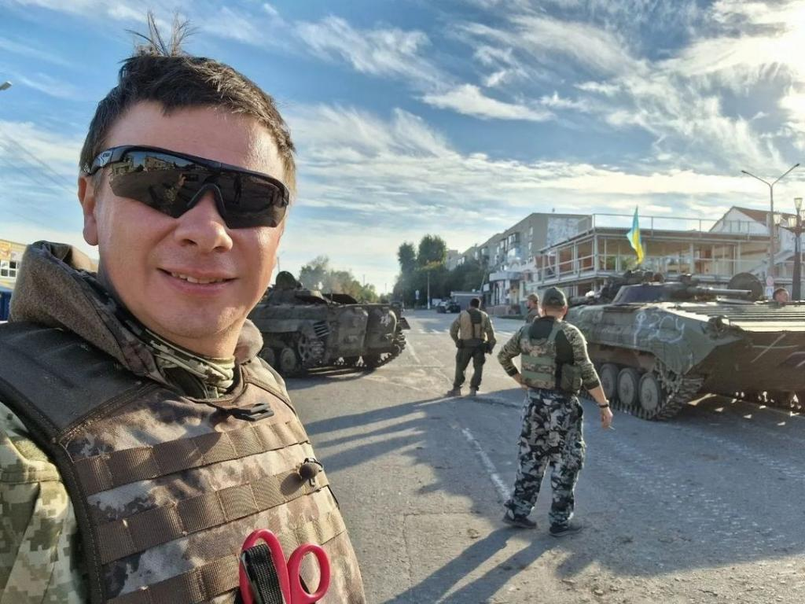
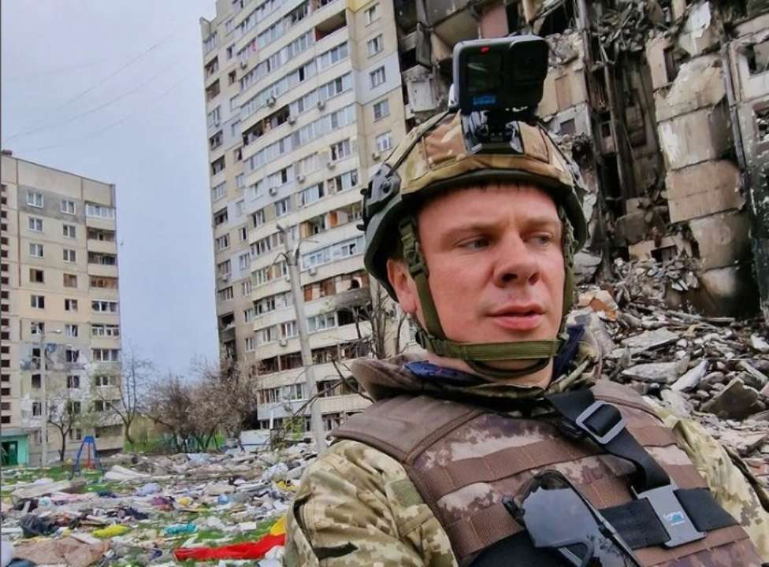

.jpg)
Дмитро народився 17 червня 1983 року в Києві.
За першою освітою — інженер
За другою — фахівець зі зв'язків з громадськістю (Київський національний університет культури і мистецтв).
У журналістику прийшов у ранньому віці: першу статтю опублікував в 12 років, а у 16 вже отримав першу роботу у тижневику «Теленеделя». Там займав посаду редактора колонки «Чоловік» (рос. «Мужчина»). Дмитро жартує, що отримав першу роботу раніше за паспорт
Як журналіст та фотограф співпрацював із десятками друкованих видань. Протягом шести років був кореспондентом газети «КП в Україні», з 2007 до 2010 року працював спеціальним кореспондентом газети «Известия в Украине», був автором статей журналів «Playboy», EGO та ін[5].
Це сюжети, рівних яким немає, я не побоюсь цього слова в СНД.
квітні 2019 року Комаров разом із друзями-авіаторами встановив рекорд України — на чотиримісному літаку екіпаж за три дні облетів усі області країни, окрім зони бойових дій на сході України та Криму. 31 серпня 2020 року президент України Володимир Зеленський вручив Дмитру Комарову почесне звання «Заслужений журналіст України». У 2021 році запустив новий авторський проєкт про подорожі Україною «Мандруй Україною з Дмитром Комаровим». Він побив рекорди телеперегляду та став найрейтинговішою програмою про подорожі на українському телебаченні за всю історію вимірів. Станом на січень 2022 на «1+1» вийшло два сезони проєкту.
У лютому 2022 року відкрито висвітлює та засуджує вторгнення російських військ на територію України та вважає неприйнятним вбивства мирних громадян окупаційними військами Росії.
Створив благодійну ініціативу #ЧашкаКави, яка допомагає тяжкохворим дітям. Ідея проєкту полягає в тому, що відмовившись від суми, що дорівнює одній чашці кави на день і передавши її на благодійність, кожен може врятувати життя. Комаров реалізовує проєкт через власні сторінки в соціальних мережах, виступаючи гарантом того, що зібрані гроші повністю підуть на лікування дитини. Ініціативу підтримує співачка Надя Дорофєєва, а у колаборації з дизайнером Андре Таном були створені іграшки та еко-сумка, гроші від продажу яких пішли на лікування підопічних проєкту. Ініціатива Дмитра Комарова #ЧашкаКави зібрала понад 38 мільйонів гривень та допомогла врятувати 32 дитячі життя. За використання своїх соцмереж з максимальною користю та ініціативу #ЧашкаКави Дмитро Комаров був удостоєний спеціальної премії «Instagram року» від журналу «XXL»
© Вся інформація захищена авторським правом 2023.